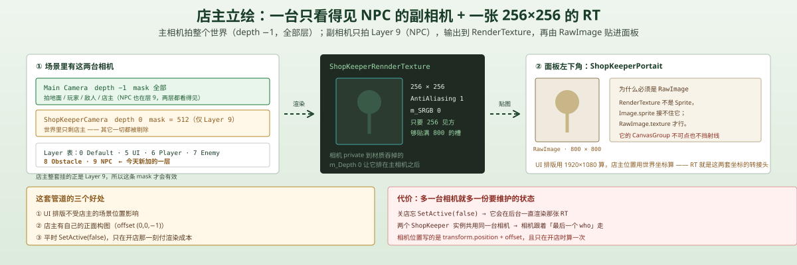
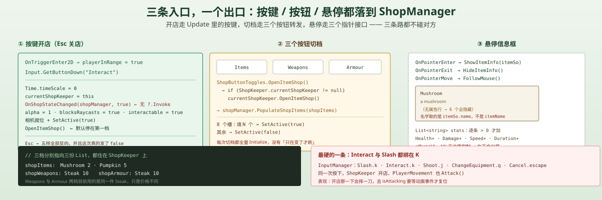

一句话说清这天的内容
Day 15 那间「关不掉的店」今天被改成了一个有人的店：
ShopKeeper挂在 NPC 身上，玩家走进触发圈按 K 开店、按 Esc 关店；开店时Time.timeScale = 0，关店恢复- 开店时把
ShopKeeperCamera移到店主位置并展开，它渲染到一张 256×256 的RenderTexture，再由面板左下角的RawImage显示——店主立绘是实时渲染的 3D 场景，不是一张贴图 - 商品分成三档：
Items/Weapons/Armour，由TopPanel上三个按钮切换 - 新增
ShopInfo：鼠标悬停商品格 → 弹出信息框 → 跟着鼠标走
事件的所有权也从 ShopManager 挪到了 ShopKeeper——这是这一天最关键的一句改动，它让 Day 15 那个「只发 true 不发 false」的状态机第一次有了双向。
脚本关系
| 脚本 | 角色 | 行数 | 关键内容 |
|---|---|---|---|
ShopKeeper | 新 | 81 | NPC：触发检测、K/Esc 开关、三档商品表、独立相机、静态 currentShopKeeper |
ShopInfo | 新 | 62 | 悬停信息框：填名字/描述/属性行、FollowMouse() |
ShopButtonToggles | 新 | 21 | 三个按钮 → 转发给 currentShopKeeper 的 OpenXxxShop() |
ShopSlot | 改 | 43 | 实现 IPointerEnter/Exit/Move，转发给 ShopInfo |
ShopManager | 改 | 68 | 移走 shopItems 与 OnShopStateChanged，改为 PopulateShopItems(List<ShopItems>) |
InventorySlot | 改 | 73 | 订阅者从 ShopManager 换成 ShopKeeper |
ShopButton.prefab | 改 | — | 三个按钮各自绑定 OpenItemShop / OpenWeaponShop / OpenArmourShop |
调用链（开店）：
玩家进入触发器 → playerInRange = true → 按 K（Interact）→ ShopKeeper.Update → timeScale = 0 + currentShopKeeper = this + OnShopStateChanged(shopManager, true) + 面板 α=1/挡射线/可点 + 相机就位 + OpenItemShop()
调用链（切档）：
点「Weapons」→ ShopButtonToggles.OpenWeaponShop() → ShopKeeper.currentShopKeeper.OpenWeaponShop() → shopManager.PopulateShopItems(shopWeapons)
调用链（悬停）：
鼠标进入商品格 → ShopSlot.OnPointerEnter → shopInfo.ShowItemInfo(itemSo) → 填三行文本；移动时 OnPointerMove → FollowMouse()
一、店主是一个有触发器的 NPC
private void OnTriggerEnter2D(Collider2D collision)
{
if (collision.CompareTag("Player"))
{
anim.SetBool("playerInRange", true);
playerInRange = true;
}
}触发器是 CircleCollider2D（IsTrigger，半径 1.57），和 Day 13 的 Loot 用的是同一套「进圈就标记」的做法。区别在于这次标记的是「可以交互」这个状态，而且它同时驱动了一个动画 bool——playerInRange 一变，店主身上会播一个「注意到你了」的动画。
ShopKeeper 挂在 Layer 9（NPC），这是本周新加的一个层：
0 Default
5 UI
6 Player
7 Enemy
8 Obstacle
9 NPC ← 新的用独立的层，是为了让那台副相机只看得见店主。 见下一节。
二、Open：一个按键同时翻转五样东西
if (Input.GetButtonDown("Interact"))
{
if (!isShopOpen)
{
Time.timeScale = 0;
currentShopKeeper = this;
OnShopStateChanged(shopManager, true);
isShopOpen = true;
shopCanvasGroup.alpha = 1;
shopCanvasGroup.blocksRaycasts = true;
shopCanvasGroup.interactable = true;
shopkeeperCam.transform.position = transform.position + cameraOffset;
shopkeeperCam.gameObject.SetActive(true);
OpenItemShop();
}
}一次按键做五件事：
| 动作 | 为什么必须一起做 |
|---|---|
timeScale = 0 | 暂停世界，玩家才能安心挑 |
currentShopKeeper = this | 让三个档位按钮知道「现在跟谁做生意」 |
OnShopStateChanged(shopManager, true) | 告诉背包「你现在处于交易上下文」 |
alpha / blocksRaycasts / interactable = 1 | 三件套一起开，面板才既可见又可用 |
相机就位 + SetActive(true) | 店主立绘只在开店时渲染 |
这五件事的顺序也是有讲究的：先暂停、再置上下文、最后才亮面板。如果先亮面板，玩家会在面板出现的同一帧里看到世界还在动。
关闭（Esc / Cancel）是完整的镜像，而且这次真的发了 false：
else if (Input.GetButtonDown("Cancel"))
{
Time.timeScale = 1;
currentShopKeeper = null;
OnShopStateChanged(shopManager, false); // ← Day 15 缺的那一次
isShopOpen = false;
shopCanvasGroup.alpha = 0;
shopCanvasGroup.blocksRaycasts = false;
shopCanvasGroup.interactable = false;
shopkeeperCam.gameObject.SetActive(false);
}Day 15 里 InventorySlot.activeShop 永远不为 null、背包左键永远在卖的问题，到这里才算被治本——虽然只治对了前提，坑 2 还在。
三、店主立绘：一台相机 + 一张 RenderTexture
这是今天最有意思的一块，也是整个项目里第一次出现「渲染到纹理」。

三件东西咬合起来：
| 东西 | 配置 | 作用 |
|---|---|---|
ShopKeeperCamera | m_Depth = 0（主相机是 −1）、CullingMask = 512（只有 Layer 9） | 一台只看得见 NPC 的相机 |
ShopKeeperRennderTexture | 256 × 256、AntiAliasing 1、m_SRGB 0 | 相机的输出目标 |
RawImage（在 ShopKeeperPortait 上） | m_Texture 指向上面那张 RT | 把 RT 当成贴图铺在面板上 |
为什么用副相机而不是直接把 ShopPanel 摆到 NPC 旁边？
三个理由：
- UI 排版不受世界坐标影响。面板要按 1920×1080 的参考分辨率排版，而 NPC 在场景里的位置是任意的。用 RT，「店主」就变成面板里一个 800×800 的普通 UI 元素。
- 店主可以有自己的构图。
cameraOffset = (0, 0, -1)让副相机贴在店主正前方 1 个单位，拍出来是标准的「正面像」，不受玩家站位影响。 - 性能上只在这一刻付钱。相机平时
SetActive(false)，只有开店那段时间在渲染——一张 256×256 的 RT，代价可以忽略。
代价也很清楚：这张 RT 是 m_Depth = 0 的第二台相机，如果哪天忘了在关店时 SetActive(false)，它会一直在背景里重复渲染。
RawImage 用的 m_Texture 而不是 m_Sprite，因为 RT 不是 Sprite。这也是为什么 ShopKeeperPortait 上挂的是 RawImage（fileID 段里的 type 114 + script guid 指向 RawImage）而不是 Image。
四、悬停信息框：三个接口 + 一个跟手
public class ShopSlot : MonoBehaviour, IPointerEnterHandler, IPointerExitHandler, IPointerMoveHandler
{
public void OnPointerEnter(PointerEventData eventData)
{
if (itemSo != null) shopInfo.ShowItemInfo(itemSo);
}
public void OnPointerExit(PointerEventData eventData)
{
shopInfo.HideItemInfo();
}
public void OnPointerMove(PointerEventData eventData)
{
if (itemSo != null) shopInfo.FollowMouse();
}
}为什么用三个接口而不是 Button 的 onClick？ 因为悬停不是点击——它要在「进入」和「离开」两个时刻做事，Button 没有这两个事件。
FollowMouse() 是 UI 里少数需要每帧写 RectTransform 的地方：
public void FollowMouse()
{
Vector3 mousePosition = Input.mousePosition;
Vector3 offset = new Vector3(10, -10, 0);
infoPanelRect.position = mousePosition + offset;
}(10, −10) 是右下偏一点，让光标不挡住文字。这是工具提示的标准做法。
属性行的拼装：List<string> + 按需显隐
List<string> stats = new List<string>();
if (itemSo.currentHealth > 0) stats.Add("Health+" + itemSo.currentHealth);
if (itemSo.damage > 0) stats.Add("Damage+" + itemSo.damage);
if (itemSo.speed > 0) stats.Add("Speed+" + itemSo.speed);
if (itemSo.duration > 0) stats.Add("Duration+" + itemSo.duration);
if (stats.Count <= 0)
{
foreach (var stat in statTexts) stat.gameObject.SetActive(false);
return;
}
for (int i = 0; i < statTexts.Length; i++)
{
if (i < stats.Count) { statTexts[i].text = stats[i]; statTexts[i].gameObject.SetActive(true); }
else { statTexts[i].gameObject.SetActive(false); }
}先算出一份「该显示几行」的列表，再按长度决定每一行的显隐——这个写法的价值在于：不管物品有几条属性，statTexts 那 6 个预制文本永远只会显示前 N 个，其余隐藏。加一条新属性不用动 UI。
坑 6 会讲这个写法的副作用。
五、三档商品：List<ShopItems> 从 ShopManager 搬到了 ShopKeeper
Day 15 的 ShopManager 自己持有一份 shopItems，今天这份表搬走了：
// ShopKeeper 上，三份独立的表
[SerializeField] private List<ShopItems> shopItems; // Mushroom 2 / Pumpkin 5
[SerializeField] private List<ShopItems> shopWeapons; // Steak 10
[SerializeField] private List<ShopItems> shopArmour; // Steak 10
public void OpenItemShop() { shopManager.PopulateShopItems(shopItems); }
public void OpenWeaponShop() { shopManager.PopulateShopItems(shopWeapons); }
public void OpenArmourShop() { shopManager.PopulateShopItems(shopArmour); }ShopManager 现在只负责「把给我的一张表填进 8 个槽」：
public void PopulateShopItems(List<ShopItems> shopItems)
{
for (int i = 0; i < shopItems.Count && i < shopSlots.Length; i++)
{
ShopItems shopItem = shopItems[i];
shopSlots[i].Initialize(shopItem.itemSo, shopItem.price);
shopSlots[i].gameObject.SetActive(true);
}
for (int i = shopItems.Count; i < shopSlots.Length; i++)
{
shopSlots[i].gameObject.SetActive(false);
}
}这个拆分是对的：ShopManager 从此不再知道「卖什么」，只做渲染；「卖什么」跟着具体店主走——这正是「连锁店不同商品」的基础形状。
但三条链路的耦合也暴露了：ShopButtonToggles 转发时要经过一个静态变量：
public void OpenItemShop()
{
if (ShopKeeper.currentShopKeeper != null)
ShopKeeper.currentShopKeeper.OpenItemShop();
}
坑
💡 坑 1（最硬）：Interact 和 Slash 都绑在 K 上
ProjectSettings/InputManager.asset 里：
| 轴 | Positive Key |
|---|---|
Slash | k |
Interact | k |
Shoot | j |
ChangeEquipment | q |
Cancel | escape |
PlayerMovement.Update 里：
if (Input.GetButtonDown("Slash") && player_Combat.enabled == true)
player_Combat.Attack();ShopKeeper.Update 里：
if (Input.GetButtonDown("Interact")) { ... 开店 ... }同一次按下 K，两个脚本都会收到 GetButtonDown。 站在店主旁边按 K：
ShopKeeper暂停世界、开店PlayerMovement同时调Attack()→ 动画播isAttacking、cooldown重置
后果是「开店那一下会挥一刀」。更微妙的是那刀会在暂停之后继续播：Time.timeScale = 0 冻结的是物理与 FixedUpdate，但 Animator 的更新走的是不受缩放影响的那条路径之一，isAttacking 这个 bool 要等 FinishAttacking 动画事件才复位。于是关店之后你可能会看到一个「半截挥剑」。
修法：给 Interact 换一个键（F 或 E），或者在 ShopKeeper 开店时顺便把 player_Combat.enabled = false、关店再打开。一个轴一个键，这是最便宜的修法。
💡 坑 2：卖出照样不校验，Day 15 的蒸发 bug 还在
InventorySlot 换掉了订阅源，但调用逻辑没变：
if (activeShop != null)
{
activeShop.SellItem(itemSo);
quantity--; // 仍然无条件扣
UpdateUI();
}ShopManager.SellItem 也仍然没有返回值。于是「商店不收的东西被扣掉」这条依然成立——只是现在多了一个具体场景：
在 Items 档开到一半，切到 Weapons 档，再左键点背包里的 Mushroom：shopSlots 里已经没有 Mushroom 了，SellItem 找不到同款，不给钱，但 quantity-- 执行 → 蘑菇少一个。
这个场景比 Day 15 更真实，因为切档现在是主动作。
💡 坑 3：ShopKeeper 在场景里有两个实例
场景里同时存在 ShopKeeper 与 ShopKeeper (1)，两个都挂了完整的 ShopKeeper 脚本、都引用了同一个 ShopManager（fileID 361691801）和同一台 ShopKeeperCamera。
而 currentShopKeeper 是 static：
public static ShopKeeper currentShopKeeper;两个实例各自 Update、各自判断 playerInRange。如果两个触发圈重叠（两个店主挨着放），谁最后执行谁赢，另一个的 isShopOpen 会被留在 true，之后再也关不掉自己——因为它的 Update 只有在 playerInRange 时才响应 Esc。
StatsManger 在 Awake 里做了「重复就销毁自己」，ShopKeeper 没有。这是同一个项目里两种不同的单例纪律。
💡 坑 4：陈旧的 currentShopKeeper 会指向一个走开的店主
ShopKeeper 只在关店时把 currentShopKeeper = null，离开触发圈时不清：
private void OnTriggerExit2D(Collider2D collision)
{
if (collision.CompareTag("Player"))
{
anim.SetBool("playerInRange", false);
playerInRange = false;
// currentShopKeeper 没有清
}
}后果：开着店走开（timeScale = 0 时玩家动不了，所以要走开必须先关店——这条侥幸成立）。但如果店主被销毁（换场景、Dead），currentShopKeeper 会变成一个已销毁的引用。Unity 的「假 null」让 != null 判断继续成立，随后 OpenItemShop() 调一个已销毁的对象 → MissingReferenceException。
💡 坑 5：OnShopStateChanged 现在是两个类各有一份
// ShopKeeper.Update 里调用的是自己的
OnShopStateChanged(shopManager, true);注意这里没有 ?.，也没有 Invoke——它直接调用了委托字段。这在 C# 里等价于 OnShopStateChanged(...) 调用一个可能为 null 的委托：没订阅者就抛 NullReferenceException。Day 7 的 OnMonsterDefeated 犯过同样的错，结论也一样：异常会中断 Update，后面的 alpha = 1、相机就位、OpenItemShop() 全都不会执行——面板看起来「按下 K 没反应」。
一行修法：OnShopStateChanged?.Invoke(shopManager, true);。
同时 ShopManager 里还留着 Day 15 那个同名事件的定义（虽然已经没人用了），两处同名不同类的事件很容易看串。
💡 坑 6：信息框显示 itemSo.name，不是 itemName
itemNameText.text = itemSo.name;ItemSo 上有一个专门给人看的 itemName 字段（Mushroom / Pumpkin），但这里取的是 ScriptableObject 继承来的 .name——那是资产文件名。
现在两者恰好一致（Mushroom.asset 的 itemName 也是 Mushroom），所以看不出问题。一旦把资产改名成 Mushroom_Lv1.asset、而 itemName 写成「蘑菇」，信息框就会显示 Mushroom_Lv1。
顺带一个更明显的症状：Pumpkin.asset 的 itemDescription 现在是 a pumpkin（Day 16 改成了英文占位），而 Day 14 时是中文「一个南瓜，看起来平平无奇」。占位文案又漂了。
💡 坑 7：InfoPopup 的 CanvasGroup 初始值是「看得见却摸不着」
场景里 InfoPopup：
m_Alpha = 1 ← 一开始就可见
m_BlocksRaycasts = 0
m_Interactable = 0而 ShopInfo.ShowItemInfo 只改 alpha = 1，HideItemInfo 只改 alpha = 0——从来没碰过 blocksRaycasts / interactable。
于是这个信息框在整个生命周期里都「不挡鼠标」。它跟着鼠标走，意味着光标永远压在它上面，而它又不拦射线，所以点击能穿过它点到下面的格子。这本来是想要的（工具提示不该挡操作），但既然 alpha = 1 初始值让它在开店前就显形，没开店的正常游戏里屏幕左边也会常驻一个空信息框（(-860, -120) 的位置，正是面板左侧）。
初始 alpha 应该设 0。
💡 坑 8：FollowMouse 每帧重算，且没有边界钳制
OnPointerMove 每年触发一次 FollowMouse()，它直接写 infoPanelRect.position：
infoPanelRect.position = mousePosition + offset;两个问题：
- 没有夹紧屏幕边界。鼠标移到屏幕最右下，信息框会有一半跑出屏幕外——而
offset又是(10, −10)（右下），正好是最容易出界的方向。 position而不是anchoredPosition。InfoPopup的锚点是(0.5, 0.5)，用position意味着在写世界坐标，一旦父级 Canvas 有缩放或CanvasScaler在缩放，偏移量(10, −10)的含义会跟着变。
标准做法是 RectTransformUtility.ScreenPointToLocalPointInRectangle + 边界钳制。
💡 坑 9：PopulateShopItems 每次切档都重新 Initialize
切档时 8 个槽全部重填一遍，包括已经显示着的那几个。Initialize 会重设 itemImage.sprite、itemNameText、priceText——这些都是 UI 重建。
更省的做法是记录「当前档位」，只在商品表真的变了才刷。现在商品只有 1–2 件，代价可以忽略；等每档十几个商品、还带翻页，这个「无条件全量重填」就会成为切换卡顿的来源。
整体设计思路
1. 事件的所有权应该给「谁改变状态」
Day 15 把 OnShopStateChanged 放在 ShopManager 上，于是「谁开谁关」这件事只能由 ShopManager 表达——而它压根不管开关。今天挪到 ShopKeeper，语义就对上了：
| Day 15 | Day 16 | |
|---|---|---|
| 事件定义在哪 | ShopManager | ShopKeeper |
谁 Invoke(true) | ShopManager.Start() | ShopKeeper.Update()（按键时） |
谁 Invoke(false) | 没有人 | ShopKeeper.Update()（Esc 时） |
| 背包订阅谁 | ShopManager | ShopKeeper |
事件该挂在「状态的拥有者」身上，而不是「被通知的一方」身上。 这是今天最干净的一处改进。
2. 三档商品 vs 一张大表
三档 List（现在） | 一张 List 带 category 字段 | |
|---|---|---|
| 加一个档 | 加一个 List + 一个 OpenXxxShop() | 加一个枚举值 + 筛选 |
| 商品跨档 | 要复制两份 | 一个字段决定 |
| 店主各不相同 | 天然支持（表在 NPC 上） | 要按 NPC 过滤 |
| 按钮接线 | 每个按钮绑一个方法 | 一个方法带参数 |
现在选了三档，因为商品种类天然是有限且固定的（物品 / 武器 / 护甲），而且按钮是三个独立的 UI 元素、各自绑方法最直观。代价是每加一档要改三处：ShopKeeper 加 List、加 OpenXxxShop()、ShopButtonToggles 加一个转发方法。
3. RenderTexture 这条路值不值
| 副相机 + RT（现在） | 直接在面板里放一张立绘图 | |
|---|---|---|
| 表现力 | 店主会动、有动画、可换装 | 静态 |
| 成本 | 一台相机 + 一张 RT + 层管理 | 一张 png |
| 复杂度 | 要管 SetActive、层的 CullingMask、相机位置 | 拖一张图 |
| 出错形态 | 忘记关 → 后台一直渲染 | 无 |
对一个「店主会转身看你」的小效果来说，这套配置偏重。它的真正价值在可扩展性：以后想让店主随玩家等级换装、想让店主做动作演示，这套管道都在。这属于「先建管道、后填内容」——和整个项目这几天的节奏一致。
4. 交互键的设计：Interact 需要独占
现在的输入表是这样的：
| 键 | 轴 | 干什么 |
|---|---|---|
| K | Slash | 挥剑 |
| K | Interact | 开店 |
| J | Shoot | 射箭 |
| Q | ChangeEquipment | 切武器 |
| 1 | ToggleStats | 属性面板 |
| 2 | ToggleSkillTree | 技能树 |
| Esc | Cancel | 关店 |
「主动作」和「情境动作」共用了一个键。 这在设计上是要避免的：挥剑是随时可用的主动作，开店是只有站在 NPC 面前才成立的上下文动作。共用一个键，就必须有一条「上下文优先级」规则来仲裁——而现在没有任何仲裁，两个脚本各收各的。
明天要补的洞
Interact换键（F / E），或开店时禁用Player_Combat。SellItem返回bool，卖不掉不扣数量——切档后的场景会真的触发。ShopKeeper加单例守卫：Awake里重复就销毁，像StatsManger那样；或干脆删掉多的那个实例。- 离店时清
currentShopKeeper：OnTriggerExit2D里置null。 OnShopStateChanged?.Invoke：补?.，并把ShopManager上那份同名定义删掉。- 信息框用
itemName而不是.name，并把资产里的英文占位改回来。 InfoPopup初始alpha设 0；blocksRaycasts保持false是对的，但要显式写进代码注释。FollowMouse加边界钳制，改用ScreenPointToLocalPointInRectangle。SetupShopItems只在档位变化时跑，别每次都全量Initialize。
一句话总结
今天把「一间关不掉的店」改成了一个有人的店：ShopKeeper 用触发圈 + Interact/Cancel 管开关，把状态事件从 ShopManager 挪到自己身上（于是 false 第一次被发出来），用一台只看得见 NPC 层的副相机把店主渲染进 256×256 的 RT 贴到面板上，再给商品格接上悬停信息框。这一天的骨架是对的——事件归了状态拥有者、商品表归了具体店主、渲染管道建好了；真正要命的是那一行输入配置：Interact 和 Slash 都绑在 K 上，按 K 会同时挥剑和开店。